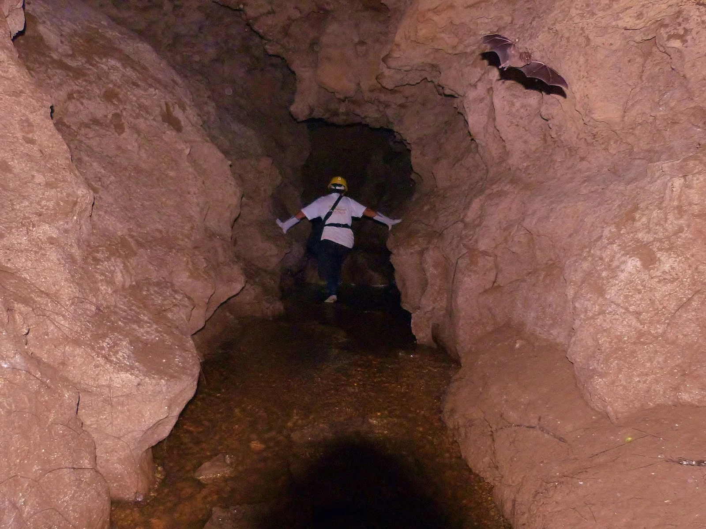
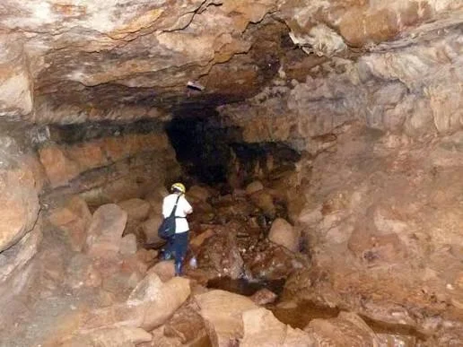
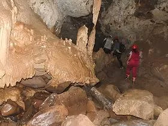
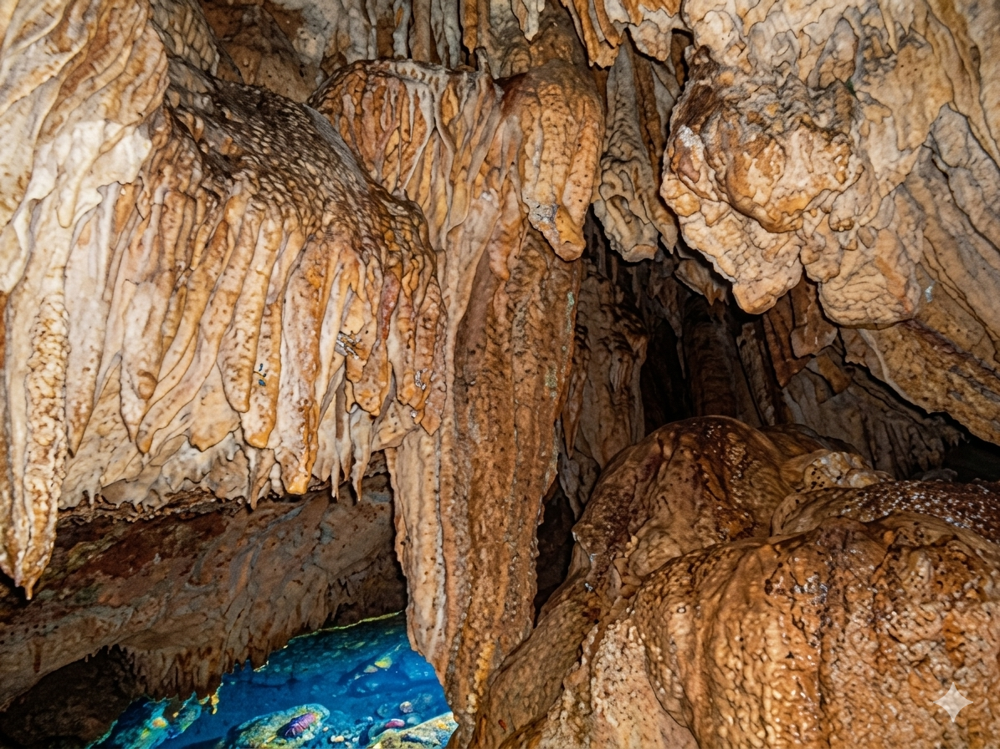

Sobre la experiencia
Conoce el lugar
Las Cavernas de Licamancha ofrecen una experiencia diferente dentro de los atractivos naturales de Mocoa. El recorrido permite aproximarse a formaciones naturales y explorar un entorno en el que el agua, las rocas y la vegetación se convierten en protagonistas.
La experiencia resulta especialmente interesante para quienes disfrutan de la exploración y desean conocer espacios menos convencionales. Antes de realizar el recorrido es importante consultar las condiciones de acceso, acompañamiento y seguridad disponibles en el lugar.



Información para visitantes.